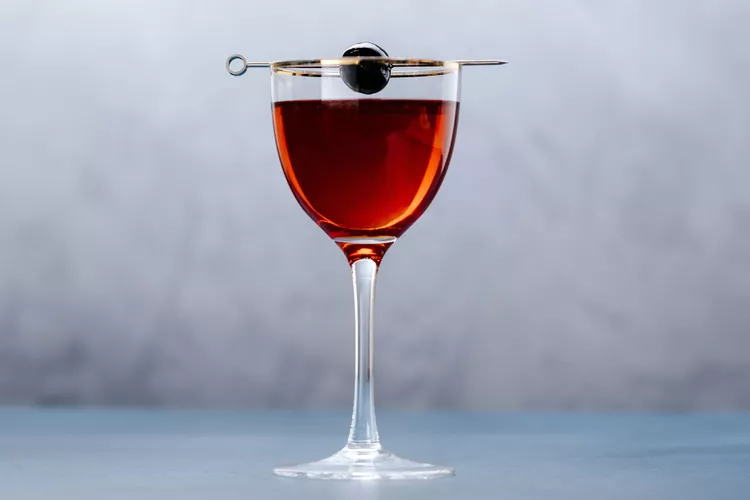

3. Rob Roy
This 19th-century classic is a Manhattan with a Scottish brogue.

Created in 1894 at New York's Waldorf Astoria Hotel, the Rob Roy is an early variation on the Manhattan,
swapping in Scotch whisky for rye whiskey.
Ingredients
2 ounces Scotch whisky
1 ounce sweet vermouth
3 dashes bitters
Maraschino cherry, for garnish
How to prepare
Nesting the ingredients
- Combine all ingredients except garnish in a mixing glass filled with ice.
Mix the cocktail.
- Stir for 20–30 seconds until well chilled.
Strain.
- Strain into a chilled cocktail coupe.
Garnish.
- Garnish with a maraschino cherry.
Popular Rob Roy Variations
Dry Rob Roy
- Use dry vermouth rather than sweet.
Perfect Rob Roy
- Rather than simply using sweet vermouth, split this ingredient between equal parts sweet and dry vermouth.
Bobby Burns
- Replace the bitters with 1/2 ounce of Benedictine.
Enjoy your Rob Roy!